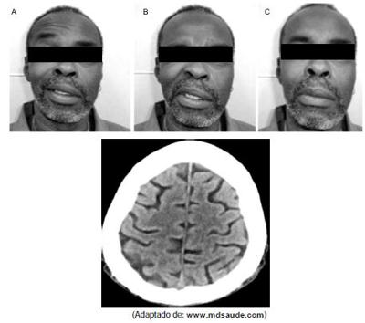
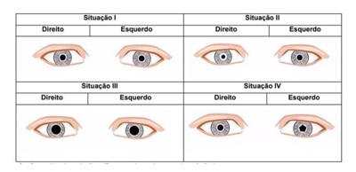
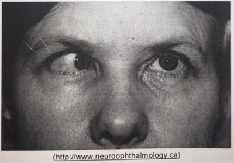
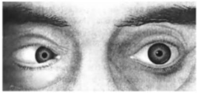
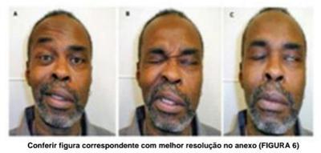
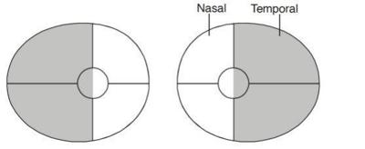

Questão 1 · Neuroanatomia · Nervos Cranianos NC · Neurologia · 4000181556Uma senhora de 72 anos apresenta súbita diplopia. A segunda imagem desaparece se ela fecha um dos olhos. Qual dos seguintes nervos cranianos é mais provável que esteja lesado nesta paciente?
A Facial.
B Óptico.
C Trigêmeo.
D Abducente.
E Vestibulococlear.
Questão 2 · Neurologia · Semiologia Neurológica · 4000166308Mulher, 75 anos de idade, independente funcional e com autonomia, refere que, recentemente, vem apresentando marcha muito instável, com muitos tropeços e tendência a quedas. Antecedente de etilismo. No exame físico, observa-se que, ao car em pé, seus pés cam afastados e há importante desequilíbrio dinâmico. Teste de Romberg: negativo. Qual é a hipótese mais provável?
A Desequilíbrio relacionado a marcha ceifante que é típica do paciente com Doença de Parkinson.
B Desequilíbrio relacionado à propriocepção, pois é uma paciente etilista com provável lesão nervosa dos músculos envolvidos no levantamento dianteiro do pé.
C Marcha escarvante devida à diminuição da flexão e extensão dos membros inferiores, resultando em abdução exagerada do membro durante a marcha.
D Marcha atáxica que deve ter relação com lesão cerebelar, que muitas vezes está presente em pacientes etilistas.
Questão 3 · Hemorragia Subaracnoidea HSA · Neurologia · Anatomia Fisiologia e Semiologia Neurológica · 4000166131Uma paciente de 45 anos de idade, tabagista, sem outros antecedentes mórbidos, deu entrada no pronto-socorro, por demanda espontânea, após apresentar quadro clínico de cefaleia súbita de forte intensidade, seguida de perda momentânea da consciência e vômitos. Após algumas horas, desenvolveu queda palpebral unilateral, embora estivesse lúcida e com rigidez de nuca. Foi feita a hipótese diagnóstica de hemorragia subaracnóidea espontânea, por provável rotura de aneurisma cerebral, e solicitada uma avaliação da neurocirurgia. Com base nesse caso hipotético, é correto afirmar que a presença de ptose palpebral sugere
A lesão do nervo óptico.
B comprometimento do nervo oculomotor.
C presença de hematoma intracraniano.
D trombose de artéria carótida interna.
E oclusão da veia central da retina.
Questão 4 · Nervos Cranianos NC · Neurologia · 4000164952Mulher, 72 anos, refere hiposmia de longa data. Há 48 horas, apresenta quadro de febre, tosse e diarreia. RT-PCR para COVID-19 positivo. É correto afirmar, sobre os distúrbios do olfato que:
A antes da pandemia de COVID-19, as infecções do trato respiratório superior não eram uma causa importante de perda do olfato
B as doenças neurodegenerativas, como doença de
C a hiposmia é muito prevalente na população idosa, fato que pode estar associado aos distúrbios nutricionais encontrados nessa faixa etária
D a perda de olfato decorrente de traumatismo cranioencefálico só ocorrem quando há fraturas associadas de base de crânio
Questão 5 · Neuroanatomia · Neurologia · 4000157367Mulher, de 69 anos de idade, procurou o Pronto-Socorro com a queixa de di culdade de deambular há 6 meses. Familiares referem que junto do distúrbio de marcha, a paciente está mais esquecida, irritada, agressiva e com o temperamento muito diferente do habitual. Quando indagada, acha que também notou algum tipo de di culdade para controlar a micção. O exame clínico geral está normal. O exame neurológico mostra redução de força em ambos os membros inferiores, sem alterações de sensibilidade. Re exos patelar e aquileo bilateralmente exaltados, assim como os axiais da face. Já os reflexos bicipital e tricipital são normoativos. Das topografias abaixo, qual delas explica as queixas apresentadas pela paciente?
A Lobos frontais bilateralmente.
B Lobo temporal à direita.
C Medular cervical.
D Lobo parietal à esquerda.
Questão 6 · Neuroanatomia · Pupilas Motricidade Ocular Intrínseca · Síndromes Pupilares · 4000172326A síndrome de compressão do terceiro par craniano (nervo oculomotor), alteração comum em aneurisma de artéria comunicante posterior, é caracterizada pela seguinte tríade:
A Ptose palpebral, miose e oftalmoplegia ipsilateral ao lado acometido.
B Ptose palpebral, miose e paralisia facial ipsilateral ao lado acometido.
C Ptose palpebral, midriase e oftalmoplegia ipsilateral ao lado acometido.
D Ptose palpebral, paralisia facial e otalgia ipsilateral ao lado acometido.
Questão 7 · Neurologia · Metabolismo Cerebral · 4000146077Levando em consideração a fisiopatologia da Encefalopatia Hipóxico Isquêmica (EHI), assinale a alternativa correta.
A A protease hidrolisa, prioritariamente, os fosfolipídios celulares, mas também pode causar a ruptura do esqueleto celular.
B A fosfolipase hidrolisa os fofolipidios celulares, com liberação de ácido araquidônico e seus metabólitos NMDA e AMPA.
C NMDA e AMPA são receptores gliais específicos que determinam a entrada de cálcio no compartimento intracelular, com ativação de enzimas como protease e fosfolipase.
D A despolarização neural provoca a liberação de glutamato, aminoácido neuroinibitório, que se acumula nos espaços intersinápticos e intercelulares.
Questão 8 · Neurologia · Metabolismo Cerebral · 4000146068Há uma diminuição de 6% na taxa de metabolismo cerebral de oxigênio na redução da temperatura corpórea a cada 1 °C. Indique o item com erro:
A O uso de hipotermia atua como estimulador das vias facilitadoras da morte cerebral e da apoptose celular.
B Existe evidência de uma diminuição dos radicais livres durante o controle da temperatura.
C Há um bloqueio à ação intracelular da exposição às excitotoxina (acionadas pelo aumento do cálcio e do glutamato.
D Redução da resposta inflamatória na síndrome pós-PCR.
Questão 9 · Sinais de Irritação Meningorradicular · Neurologia · 4000145228Sinal de Kernig e Sinal de Brudzinski são indícios de:
A irritação meníngea.
B síndromes nefróticas.
C infecção do trato biliar.
D irritação peritoneal.
Questão 10 · Síndrome de Horner · Neurologia · 4000144609Lesões hipotalâmicas, principalmente, na região posterior e ventrolateral, podem produzir constrição pupilar ipslateral, geralmente, associado com ptose e anidrose, denominada Síndrome de:
A West.
B Haglung.
C Horner.
D Otelo.
Questão 11 · Neurologia · Síndromes Sensitivas · 4000144601É o sinal semiológico caracterizado por oscilação ou queda ao fechar os olhos, indica comprometimento das vias de sensibilidade profunda. Trata-se do sinal de:
A Romberg.
B Dunphyn.
C Rovsing.
D Hoagland.
Questão 12 · Medula Espinhal · Neurologia · 4000143689Mulher jovem (25 anos) procura atendimento de urgência queixando-se de “sensação esquisita” e fraqueza em membros inferiores. Esta percebido há cerca de 2-3 dias, incialmente leves e que foram piorando progressivamente. Notou também di culdade em controlar a micção. Exame neurológico revela paresia crural direita (força muscular grau 4), perda da propriocepção e sensibilidade vibratória no membro inferior direito, redução da sensibilidade dolorosa e térmica em membro inferior esquerdo, Babinsky à direita e reflexos patelar e aquileu aumentados à direita. Qual a topogra a responsável pelos achados do exame neurológico?
A Decussação das pirâmides.
B Cauda equina.
C Medula espinhal cervical à direita.
D Medula torácica baixa à direita.
E Medula lombar baixa direita
Questão 13 · Quadro clínico diagnóstico e sinais de alarme · Síndromes Sensitivas · 4000143206Homem de 65 anos, sedentário, com hipertensão arterial sistêmica e IMC = 29kg/m² , apresenta episódios ocasionais de lombalgia. Três dias após levantar peso em casa, iniciou quadro de lombalgia aguda com manifestações neurológicas. Após realizar ressonância magnética de coluna, mostrando hérnia de disco entre L4-L5, é esperado que o exame clínico mostre reflexo patelar e aquileu:
A preservados e marcha dificultada sobre os calcanhares
B diminuídos e marcha dificultada sobre os calcanhares
C preservados e marcha dificultada na ponta dos pés
D diminuídos e marcha dificultada na ponta dos pés
Questão 14 · Quadro Clínico · Tronco Encef álico e Cerebelo · Neurologia · 4000143012O par craniano acometido com mais frequência no aumento da pressão intracraniana é:
A III
B IV
C V
D VI
Questão 15 · Neurologia · Anatomia Fisiologia e Semiologia Neurológica · 4000141657Síndrome do Neurônio Motor Superior e Inf erior Na síndrome de primeiro neurônio ou do neurônio motor superior, as manifestações são:
A hipotonia, fraqueza muscular, hiporreflexia, fasciculações.
B ausência de reflexo cutâneo abdominal, fraqueza muscular, reflexo cutâneo plantar em flexão e hipertonia.
C reflexo cutâneo plantar em flexão, normorreflexia, normotonia e leve fraqueza muscular.
D hipertonia, fraqueza muscular, hiperreflexia e presença de sinal de Babinski.
Questão 16 · Neurologia · Anatomia Fisiologia e Semiologia Neurológica · 4000140613Síndrome do Neurônio Motor Superior e Inf erior Uma senhora de 63 anos acorda com queixa de mão caída à direita e vai à consulta com um neurologista. Durante o exame físico, o médico constata que a paciente apresenta força normal no membro superior esquerdo e nos membros inferiores. No membro superior direito, tem força grau 3 na extensão dos dedos e dos punhos, abdução dos dedos e abdução do polegar, grau 4 na exão dos dedos e do punho, grau 5 no tríceps, no bíceps, no deltóide, no supra e no infraespinhoso como também no rombóide. Veri ca ainda que os reflexos profundos são assimétricos e mais intensos à direita, apresentando reflexo cutâneo-plantar indiferente à direita e flexor à esquerda, sem déficits sensitivos. A topografia mais provável da lesão é
A giro pré-frontal esquerdo.
B cordão posterior do plexo braquial.
C sétima raiz cervical.
D nervo radial no braço.
Revisar: possível letra faltando em enunciado
Questão 17 · Neurologia · Paralisia Facial Central · Paralisia Facial Perif érica · 4000140430Paciente sexo masculino, 58 anos, com antecedente de Hipertensão Arterial e pronto- socorro com relato de que acordou com desvio de rima para direita. Ao exame físico, tinha força grau V em todos os membros. Segue abaixo foto do exame da face e da tomografia de crânio realizada. Diante do quadro clínico, o provável diagnóstico e a sua provável fisiopatologia são:

A Acidente vascular cerebral − Acometimento da cápsula interna à esquerda.
B Acidente vascular cerebral − Acometimento do tronco cerebral.
C Paralisia facial periférica − Acometimento do nervo trigêmeo.
D Paralisia facial periférica − Acometimento do nervo facial.
E Paralisia facial periférica − Acometimento do nervo glossofaríngeo.
Questão 18 · Neurologia · Tumores do Sistema Nervoso Central · Anatomia Fisiologia e Semiologia Neurológica · 4000139895Menino, 5 anos de idade, vem à consulta por cefaleia e vômitos que iniciaram há 15 dias. Ao exame físico, apresenta edema de papila no fundo de olho, comprometimento dos pares cranianos (IX, X, XI e XII), hemiparesia espástica à direita com sinal de Babinski e déficit sensitivo em hemicorpo à direita. Com base nestes dados, o provável diagnóstico é:
A tumor de tronco encefálico.
B tumor cerebelar.
C tumor do lobo frontal.
D tumor do quiasma óptico.
E tumor de medula cervical.
Questão 19 · Neurotransmissores · Neurologia · 4000129898Paciente de 28 anos de idade foi doar sangue pela primeira vez. Quando da punção do cateter venoso apresentou mal estar, seguido de alteração do nível de consciência com duração de aproximadamente 6 segundos. Logo após a alteração do nível de consciência apresentava pressão arterial=72/44 mmHg, que normalizou com a infusão de solução salina isotônica e posicionamento do paciente. Considerando a hipótese diagnóstica mais provável, avalie as asserções a seguir e a relação causal proposta entre elas: I - Houve queda da pressão arterial com redução da perfusão cerebral abaixo dos níveis compensatórios de auto-regulação PORQUE II - houve alteração súbita e transitória na atividade autonômica eferente, com aumento do uxo de saída parassimpático e inibição do simpático, característica de síncope por falha autonômica.
A As asserções I e II são proposições verdadeiras, e a segunda é uma justificativa da primeira.
B As asserções I e II são proposições verdadeiras, mas a segunda não é uma justificativa da primeira.
C A asserção I é uma proposição verdadeira e a asserção II é uma proposição falsa.
D A asserção I é uma proposição falsa e a asserção II é uma proposição verdadeira.
E As asserções I e II são proposições falsas.
Questão 20 · Neurologia · Paralisia Facial Central · Paralisia Facial Perif érica · 4000129160Assinale a assertiva correta sobre paralisia facial.
A O nervo facial é o mais acometido por paralisias.
B Os ramos centrais (zigomático e bucal) têm pior prognóstico de recuperação do que os extremos 9temporal, marginal da mandíbula e cervical)
C Para etiologias iatrogênicas e traumáticas, a exploração do nervo deve ser programada em 6 meses após o trauma.
D Os exames de nervo são preferíveis as anastomoses primárias, quando se analisa prognóstico de reconstrução.
Questão 21 · Demências · Síndromes Cognitivas · Síndromes Neurovasculares · 4000127732Uma mulher de 76 anos com antecedentes de diabetes e hipertensão arterial foi trazida a emergência do Hospital de Base apresentando quadro súbito de hemiparesia desproporcionada a direita e di culdade para falar. Um exame mais detalhado mostrou que ela era capaz de obedecer comando simples, mas era incapaz de nomear ou repetir o nome de objetos que lhe foram mostrados. Com base nesses dados podemos afirmar que a paciente apresentava:
A Afasia sensitiva
B Afasia motora
C Disartria hipocinética
D Disartria hipofonica
Questão 22 · Síndromes Sensitivas · 4000127731Um homem de 52 anos com antecedentes de alcoolismo procurou atendimento referindo di culdade para andar e quedas frequentes. Seu exame físico mostrava uma marcha talonante, arre exia patelar e aquiliana, além da presença de sinal de Romberg. Do ponto de vista topográfico podemos afirmar que houve comprometimento:
A Das vias piramidais
B Do trato espinotalamico lateral
C Dos cordões posteriores da medula
D Do trato espino cerebelar
Questão 23 · Síndromes Sensitivas · 4000109866Mulher, de 23 anos de idade, procurou o Pronto-Socorro com a queixa de ""sensação estranha de fraqueza nas pernas"", também relata ""uma sensação de aperto, como uma faixa apertada na altura do eu umbigo"". Diz quer percebeu os sintomas há três dias, que inicialmente eram muito leves mas que pioraram progressivamente. Quando indagada, acha que também notou algum tipo de di culdade para controlar a micção. O exame clínico geral está normal. O exame neurológico mostra paresia crural direita (força muscular grau 4), perda da sensibilidade vibratória e aneurestésica no membro inferior direito, diminuição da percepção dolorosa e térmica em membro inferior esquerdo, sinal de Babinski á direita, os reflexos patelar a aquileu á direita estão exaltados. Qual a topografia responsável pelos achados do exame neurológico?
A Decussação das pirâmides.
B Cauda equina.
C Medula espinhal cervical à direita.
D Medula torácica baixa à direita.
Questão 24 · Síndromes Pupilares · 4000067483Para avaliar as representações abaixo devem considerar a situação I como pupilas normais (circulares centradas e diâmetros normais). As situações II, III e IV representam diferentes formas de discorias. Assinale com [V] para as assertivas verdadeiras e [F] para as falsas e escolha a alternativa que contenha a sequencia correta. [ ] Na situação II verifica-se anisocoria com miose à direita; [ ] Na situação III verifica-se isocoria e midríase bilateral; [ ] Na situação IV verifica-se discoria à direita; [ ] Na situação III verifica-se isocoria e miose bilateral; [ ] Na situação IV verifica-se midríase à direita

A F, V, F, V, F
B V, F, V, F, V
C F, F, F, V, F
D V, V, F, F, F
E Nenhuma das sequencias acima está correta.
Questão 25 · Neurologia · Hemisf érios Cerebrais · 4000053850Avalie as asserções a seguir e a relação causal proposta entre elas: I - Lesões do hemisfério cerebral esquerdo não geram negligência contralesional significativa e lesões do hemisfério direito dão origem à negligência hemiespacial esquerda contralesional grave; PORQUE; II – o hemisfério direito dirige a atenção para todo o espaço extrapessoal, enquanto o esquerdo dirige a atenção principalmente para o hemiespaço direito contralateral.
A As asserções I e II são proposições verdadeiras, e a segunda é uma justificativa daprimeira.
B As asserções I e II são proposições verdadeiras, mas a segunda não é uma justificativada primeira.
C A asserção I é uma proposição verdadeira e a asserção II é uma proposição falsa.
D A asserção I é uma proposição falsa e a asserção II é uma proposição verdadeira.
E As asserções I e II são proposições falsas.
Questão 26 · Síndrome do Neurônio Motor Superior e Inf erior · 4000039495A característica que NÃO faz parte da Síndrome do 1º neurônio motor é
A paralisia espástica.
B hipotonia.
C hiperreflexia.
D babinski.
Questão 27 · Síndromes Cerebelares · Síndromes Sensitivas · 4000039485Qual dos testes abaixo NÃO é utilizado para avaliar a coordenação e equilíbrio?
A Prova de Romberg.
B Prova índex-nariz.
C Reflexo corneano.
D Avaliação da marcha.
Questão 28 · Diencéf alo · Neurologia · 4000030237Os neuro-hormônios secretados pelo hipotálamo são fatores liberadores de hormônios hipo sários, apenas um deles tem efeito inibidor sobre a secreção hipofisária de prolactina. Qual o nome desse neuro-hormônio?
A GNRH.
B Serotonina.
C GHRH.
D Dopamina.
E Adrenalina.
Questão 29 · Neuroanatomia Vascular · Neurologia · Hemisf érios Cerebrais · 4000179902O paciente apresentou descoordenação, fraqueza e perda somatosensorial na perna direita. A causa mais provável desse quadro é:
A Epilepsia do lobo frontal esquerdo.
B Tumor no cortexprefrontal esquerdo.
C Tumor no hemisfério cerebelar direito.
D Acidente vascular cerebral na artéria cerebral anterior esquerda.
Questão 30 · Medula Espinhal · Sistema Nervoso Perif érico · 4000120700Homem de 42 anos, pedreiro, queixa-se de dor lombar progressiva com irradiação para o membro inferior direito, há seis meses. Exame físico: dé cit de extensão do joelho direito. Baseando-se na hipótese diagnóstica de hérnia de disco lombar, a raiz neurológica envolvida e o seu nível de emergência são, respectivamente:
A L2; nível L1-L2.
B L2; nível L2-L3.
C L3; nível L2-L3.
D L3; nível L3-L4.
Questão 31 · Nervos Cranianos NC · 4000101002É de extrema importância a familiaridade do médico com critérios de morte encefálica, tendo os mesmos sido atualizados por Resolução do Conselho Federal de Medicina em 2017. Sobre o exame neurológico realizado para tal, qual é a via eferente do reflexo córneo-palpebral?
A Nervo facial
B Nervo oculomotor
C Nervo óptico
D Nervo trigêmeo
Questão 32 · Síndromes Cerebelares · 4000100986Mulher de 40 anos procurou atendimento referindo di culdade para andar em linha reta há três dias. Descreve que o problema começou duas semanas depois dela apresentar infecção de vias aéreas superiores. Ao exame não apresentava alterações na força muscular ou na sensibilidade, entretanto não conseguia caminhar pé ante pé. Essa característica observada no exame da marcha sugere:
A Comprometimento do cerebelo
B Comprometimento do cordão posterior da medula espinhal
C Comprometimento do nervo periférico
D Comprometimento dos receptores proprioceptivos nos músculos e tendões
Questão 33 · Síndrome do Neurônio Motor Superior e Inf erior · 4000100976Paciente de 56 anos com antecedentes de acidente vascular cerebral há cerca de dois anos procurou atendimento com queixa de dor no membro inferior esquerdo. Ao exame foi observada a presença do sinal de Babinski a esquerda. A presença deste sinal clássico da semiologia neurológica sugere:
A Lesão do neurônio motor inferior
B Lesão na junção neuromuscular
C Lesão do neurônio motor superior
D Lesão muscular
Questão 34 · Síndrome de Horner · Síndrome de Horner · Síndrome de ClaudeBernardHorner · 4000096806Adaptada Homem, 66a, com dor no ombro direito, fraqueza e dormência no membro superior direito há 2 meses. Exame físico: neurológico: leve ptose palpebral à direita e miose ipsilateral. O QUADRO CLÍNICO PODE SER EXPLICADO POR:
A Neoplasia de pequenas células de pulmão.
B Tumor neuroendócrino bem diferenciado de pulmão.
C Neoplasia não pequenas células de pulmão.
D Adenocarcinoma de pulmão.
Questão 35 · Quadro clínico · Tratamento e prof ilaxia · Doença do Neurônio Motor · 4000090106Paciente convivendo com HIV, em tratamento irregular, admitido no PS com perda súbita de força muscular à esquerda. Ao exame físico: hemiparesia E e paralisia de hemiface esquerda, inferior à órbita. Realizada TC de crânio com contraste que evidenciou múltiplas lesões hipodensas, com edema perilesional e realce anelar pelo contraste. Assinale qual alternativa preenche o adequado Diagnóstico Sindrômico, a localização da lesão de SNC esperada na tomogra a e a conduta inicial para o caso:
A Síndrome do neurônio motor superior/paralisia de facial periférica - lesão acometendo gânglios da base à esquerda e pedúnculo cerebral – iniciar AAS 300mg e sinvastatina.
B Síndrome do neurônio motor superior/paralisia de facial central - lesão acometendo gânglios da base à direita e pedúnculo cerebral – iniciar Sulfadiazina, pirimetamina e ácido folínico.
C Síndrome do neurônio motor superior/paralisia de facial central - lesão acometendo gânglios da base à direita e pedúnculo cerebral – iniciar Ceftriaxone e dexametasona e coleta de líquor.
D Encefalite - lesão acometendo gânglios da base à direita e pedúnculo cerebral – indicado drenagem cirúrgica e iniciar Ceftriaxone e metronidazol.
Questão 36 · Síndromes Cerebelares · 4000083247Marcha de base alargada, ebriosa e com posicionamento errático dos pés, porém, sem tontura subjetiva, são características de que tipo de marcha atáxica?
A Disfunção cerebelar;
B Distúrbio de marcha frontal
C Disfunção de orelha interna;
D Síndromes parkinsonianas;
E Ataxia sensorial;
Questão 37 · Síndrome de Horner · Síndrome de ClaudeBernardHorner · 4000080757Um paciente do sexo masculino com 60 anos de idade, chega ao ambulatório queixando-se de emagrecimento. Ao exame físico, o médico identi ca que ele apresenta um quadro compatível com a síndrome de Horner que é característica dos tumores na seguinte localização:
A Base do pulmão direito.
B Ápice pulmonar.
C Lobo médio.
D Pleura.
Revisar: possível letra faltando em enunciado
Questão 38 · Síndrome de Horner · Síndrome de Horner · 4000079297Um jovem de 18 anos de idade é internado devido a quadro de tetraparesia há 2 dias. No exame de suas pupilas percebe-se que a direita mede 6mm e a esquerda 3mm de diâmetro. Com a redução da luz ambiente a diferença entre os diâmetros pupilares aumenta. Os reflexos fotomotor direto e consensual estão presentes bilateralmente. A motricidade ocular extrínseca é normal. Pode-se concluir, portanto, que o paciente apresenta uma pupila de
A Horner à esquerda, por lesão na medula.
B Adie à esquerda, por lesão no gânglio ciliar.
C Marcus Gunn à direita, por lesão do nervo óptico.
D Argyll Robertson à direita, por lesão na área pré-tectal.
Questão 39 · Paralisia Facial Perif érica · 4000079220Quando Violeta, uma criança de 5 anos de idade, acordou, sua mãe notou que a boca da menina estava torta para direita e ela não fechava olho esquerdo. Levou a lha ao pronto socorro, e o plantonista pediátrico confirmou que a criança estava com paralisia aguda do rosto à esquerda. Do ponto de vista clínico semiológico, a criança apresenta
A paralisia facial central à direita.
B paralisia facial periférica à direita.
C paralisia facial central à esquerda.
D paralisia facial periférica à esquerda.
Questão 40 · Divisões do Sistema Nervoso · 4000074044A projeção cortical, essencial para a sensação e percepção visual, está localizada:
A No hipocampo.
B Nos lobos parietais.
C Nos lobos occipitais.
D Nas áreas pré-frontais.
E Na cissura de rolando.
Questão 41 · Nervos Cranianos NC · 4000067152Mulher, 56 anos de idade, com Diabetes Mellitus tipo 2, em uso de insulina há 15 anos, é admitida em pronto- socorro com queixa de diplopia. Ao exame clínico: bom estado geral, sem alterações em semiologia cardíaca, pulmonar, abdominal ou de membros. Durante realização do exame neurológico, apresentou o achado reproduzido a seguir. Quais são o músculo e o par craniano acometidos, respectivamente?

A Músculo oblíquo superior esquerdo e IV nervo.
B Músculo oblíquo superior esquerdo e VI nervo.
C Músculo reto lateral esquerdo e IV nervo.
D Músculo reto lateral esquerdo e VI nervo.
Questão 42 · Síndrome do Neurônio Motor Superior e Inf erior · 4000003105Um paciente foi diagnosticado como tendo síndrome do primeiro neurônio motor ou piramidal. Qual das alternativas abaixo traduz esta síndrome:
A Diminuição da força muscular, hipotrofia tardia, hipotonia, hiporreflexia profunda, sinal de Babinski, clônus, Hoffmann.
B Diminuição da força muscular, hipertonia, hipotrofia precoce, fasciculações, hiperreflexia profunda.
C Diminuição da força muscular, hipotonia, hipotrofia precoce, fasciculações, hiporreflexia profunda.
D Diminuição da força muscular, hipotrofia tardia, hipertonia, espasticidade, hiperreflexia profunda, sinal de Babinski, clônus.
Questão 43 · Paralisia Facial Perif érica · 4000120061Uma gestante de 32 anos de idade, no terceiro trimestre da gestação desenvolve fraqueza súbita na hemiface esquerda acompanhado de dificuldade para fechar o olho, hiperacusia e diminuição do sabor, qual o diagnóstico mais provável?
A Trombose de seio sagital superior.
B AVC de região temporo parietal.
C Paralisia de Bell.
D Esse quadro é compatível com um quadro psicossomático.
Questão 44 · Paralisia do Nervo Oculomotor III NC · 4000108928Paciente de 66 anos, sexo feminino, é diabética tipo 2, porém faz uso de medicação e acompanhamento clínico irregulares. Procura atendimento ambulatorial com queixa de visão dupla e cefaleia iniciadas há alguns dias. Ao exame físico, o olho direito está normal, mas o olho esquerdo apresenta oftalmoplegia e ptose palpebral. As pupilas são simétricas e fotorreagentes ao estímulo luminoso. O restante do exame físico e neurológico é normal. O diagnóstico presuntivo mais provável é
A neuropatia facial periférica.
B neuropatia facial central.
C neuropatia oculomotora.
D neurite óptica
E neuropatia trigeminal.
Questão 45 · Anatomia Fisiologia e Semiologia Neurológica · Síndrome do Neurônio Motor Superior e Inf erior · 4000096043Semiologia Neurológica Lesões supratentoriais caracterizam-se por:
A Hemiplegia contra-lateral, respiração de Cheyne-Stokes e pupilas normais.
B Hemiplegia ipsilateral, hiperpnéia e alterações pupilares.
C Tetraparesia, respiração irregular e alterações pupilares.
D Sem sinais de localização, reflexos de tronco íntegros.
Questão 46 · Metabolismo Cerebral · 4000096000Sobre a fisiologia e metabolismo cerebral, assinale a alternativa INCORRETA:
A fluxo sanguíneo cerebral médio é de 60ml/100g/minuto. Essa média de fluxo alcança taxas maiores na substância cinzenta, que pode chegar a 100ml/100g/minuto e valores menores na subtância branca.
B A grande demanda de energia dos neurônios cerebrais é suprida pela Adenosina Trifosfato (ATP), por meio da via da glicólise, do ciclo cítrico e da cadeia respiratória.
C A manutenção do fluxo sanguíneo cerebral depende de um equilíbrio entre a pressão intracraniana e pressão arteria média.
D Elastância intracraniana é a capacidade do crânio de tolerar aumentos do volume, sem um aumento correspondente da pressão intracraniana.
Questão 47 · Semiologia Neurológica · 4000095912A medula espinhal origina-se da extremidade caudal da medula oblonga, no nível do forame magno. Dos muitos tratos que integram a medula espinhal, somente três podem ser avaliados clinicamente: os corticoespinhais laterais, os espinotalâmicos e os posteriores. Assinale a alternativa CORRETA em relação à localização na medula espinhal, função e métodos para testar cada trato:
A Trato corticoespinhal, localizada no trajeto anterolateral da coluna, relacionada com o controle da força motora do mesmo lado do corpo; avaliada através da contratura voluntária ou involuntária em resposta aos estímulos dolorosos.
B Trato espinotalâmico, localizado no segmento posterolateral da medula, função relacionada com a sensação de dor e temperatura do lado oposto do corpo; avaliada através de uma picada de agulha ou toque leve.
C Colunas dorsais, localizadas no trajeto posterolateral da medula; função relacionada com a propriocepção, sensação de vibração no mesmo lado do corpo; avaliado pela sensação de posição dos dedos do pé ou da mão ou pela sensação de vibração, utilizando um diapasão.
D Trato corticoespinhal, localizada no segmento posterolateral da medula, relacionada com controle da força do mesmo lado do corpo; avaliada através da contratura voluntária ou involuntária em resposta aos estímulos dolorosos.
Questão 48 · Anatomia Fisiologia e Semiologia Neurológica · Semiologia Neurológica · 4000095594Todos esses testes com ferramentas para avaliação neurológica e pressão plantar foram validados em estudos e podem ser usados para o diagnóstico da perda de sensibilidade protetora. Sobre isso, podemos apenas concordar que:
A O diapasão 128 Hz e o martelo não testam fibras grossas sensitivas (beta), somente as motoras (A alfa), para avaliação de sensibilidade vibratória e reflexos aquileus, respectivamente.
B O diapasão 128 Hz e o martelo testam fibras grossas sensitivas (beta), mas não as motoras (A alfa), para avaliação de sensibilidade vibratória e reflexos aquileus, respectivamente.
C O diapasão 128 Hz e o martelo testam fibras grossas sensitivas (beta) e motoras (A alfa), para avaliação de sensibilidade térmica e reflexos aquileus, respectivamente.
D O diapasão 128 Hz e o martelo testam fibras grossas sensitivas (beta) e motoras (A alfa), para avaliação de sensibilidade vibratória e reflexos aquileus, respectivamente.
Questão 49 · Sinais de Irritação Meningorradicular · Síndromes Sensitivas · 4000081803Síndrome do Neurônio Motor Superior e Inf erior Em relação ao exame clínico de um paciente suspeito de meningite, Bare & Smeltzer (2005) descrevem que a irritação meníngea provoca sinais característicos. Um desses sinais é positivo quando o pescoço do paciente é exionado e ocorre a exão dos joelhos e quadris; e, quando é empreendida a exão passiva do membro inferior de um lado, observa-se um movimento similar no membro oposto. A presença dessas características é descrita como sinal positivo de:
A Kernig
B Brudzinski
C Chvostek
D Trousseau
Questão 50 · Síndrome de Horner · 4000069933Idoso de 62 anos, com hipertensão arterial sistêmica, diabetes mellitus tipo 2 e hipercolesterolemia, sem tratamento regular, apresenta quadro neurológico de instalação abrupta, caracterizado por vertigens, disfonia, disfagia e engasgos, além de náuseas e vômitos. Ao exame neurológico, é detectado nistagmo vertical, analgesia na hemiface direita e nos segmentos corporais contralaterais, paralisia do véu palatino à direita, ataxia à direita e síndrome de Claude-Bernard-Horner ipsilateral. O exame de imagem realizado no paciente provavelmente evidenciará:
A Hemorragia pontina extensa.
B Necrose isquêmica da fosseta lateral do bulbo.
C Lesões desmielinizantes à direita na ponte e mesencéfalo.
D Edema citotóxico no território da artéria cerebral média direita.
Questão 51 · Síndrome de Horner · Tumor de Pancoast · Síndrome de ClaudeBernardHorner · 4000060579Homem de 60 anos de idade, tabagista pesado, iniciou quadro de dor torácica irradiada para o membro superior direito. A telerradiogra a de tórax evidenciou a presença de grande tumoração no ápice pulmonar ipsilateral. São alterações clínicas associadas ao quadro, EXCETO:
A Ptose palpebral à direita
B Miose à direita
C Anidrose facial à direita
D Exoftalmia à direita
E Câncer de pulmão não pequenas células
Questão 52 · Síndromes Medulares · Síndrome do Neurônio Motor Superior e Inf erior · Nervos Perif éricos · 4000056575Na semiologia neurológica, é de fundamental importância a correta caracterização e interpretação dos achados para um adequado diagnóstico clínico. Analise as afirmativas e marque a opção INCORRETA.
A Espasticidade e hiperreflexia são características de lesões do primeiro neurônio motor.
B Sinal de Babinski é manifestação de lesão do segundo neurônio motor.
C Fasciculações e hiporreflexia são manifestações de lesão do segundo neurônio motor.
D Deficit motor, nível sensitivo e alteração esfincteriana apontam para uma lesão na medula espinhal.
E Marcha escarvante é típica de lesões em nervos periféricos (neuropatia periférica).
Questão 53 · Fisiopatologia · Metabolismo Cerebral · 4000036396O conhecimento da siologia do uxo sanguíneo e do consumo de oxigênio cerebral é importante para o tratamento de pacientes vítimas de traumatismo craniano grave. Sobre este assunto assinale a alternativa INCORRETA:
A Segundo a Doutrina de Monro-Killie os três componentes intracranianos que dividem um compartimento rígido, estão em equilíbrio dinâmico. Se o volume de um dos componentes aumenta, o volume de um ou mais dos outros componentes deve diminuir ou a pressão intracraniana irá aumentar.
B Quando a complacência é baixa, o conteúdo é pouco compreenssível e a pressão intracraniana irá se elevar bastante mesmo que com pequenos aumentos do volume. Quando a elastância é reduzida há menor variação de pressão para uma pequena mudança de volume.
C A pressão de perfusão cerebral normal é cerca de 80mmHg, e quando abaixo de 50mmHg aparecem sinais evidentes de isquemia e atividade elétrica reduzida.
D Valores muito baixos de PaO2 (menor que 50mmHg), cursam com aumento do fluxo sanguíneo cerebral por vasodilatação.
Questão 54 · Af asias · 4000029507Portador de sequela de TCE apresenta discurso pobre e monossilábico, quase sempre hesitante, mas com a capacidade de repetir frases preservadas, bem como a compreensão, apresenta afasia do tipo:
A Transcortical sensitiva.
B Transcortical motora.
C De Wernicke.
D De Broca.
E De condução.
Questão 55 · Avaliação Clínica · Anatomia Fisiologia e Semiologia Neurológica · 4000015282Criança de cinco anos de idade chega à emergência com alteração do estado mental, em coma. Quais os passos fundamentais da avaliação neurológica para essa criança, além do nível de consciência e do padrão respiratório?
A Avaliação das pupilas, motilidade ocular extrínseca e postura motora.
B Avaliação da resposta motora, movimentos oculares e resposta verbal.
C Avaliação da abertura ocular, da resposta à dor e de déficits neurológicos.
D Avaliação da hipertensão intracraniana, da herniação cerebral e movimentos oculares.
Questão 56 · Síndrome de Horner · 4000004941A Síndrome de Horner é caracterizada por:
A enoftalmia, ptose palpebral e miose.
B exoftamia, miose e ptose palpebral.
C enoftalmia, midríase e anidrose.
D exoftalmia, midríase e ptose palpebral.
Questão 57 · Paralisia do Nervo Oculomotor III NC · 4000002619Nas paralisias do nervo oculomotor, é CORRETO afirmar que:
A Com ataxia contralateral e tremulação, a condição é síndrome de Weber.
B Com hemiplegia contralateral, a lesão se situa na área do núcleo vermelho.
C No diabetes, a pupila é poupada.
D Causada por aneurisma, é indolor.
E O olho fica em extorsão é abdução.
Questão 58 · Lesão Retroquiasmática · 4000002303Em relação a um achado de hemianopsia homônima diante da avaliação subjetiva do campo de visão, ou seja, o exame do campo visual que justifica o diagnóstico de lesão, caracteriza-se como:
A Quiasma óptico.
B Radiações ópticas.
C Nervo oculomotor.
D Nervo zigomático facial.
E Segundo nervo craniano.
Questão 59 · Pálpebras · 4000002261Inúmeras doenças sistêmicas podem causar alterações do olho e seus anexos. A ptose é uma manifestação ocular que apresenta as seguintes doenças sistêmicas associadas, EXCETO:
A Miastenia gravis
B Distrofia miotônica.
C Síndrome de Horner.
D Insuficiência cardíaca.
E Paralisia ou regeneração aberrante de NCIII.
Questão 60 · Neurof isiologia · 4000001828Em relação à monitorização cerebral, qual das técnicas abaixo é considerada padrão ouro?
A EEG.
B PIC com cateter ventricular.
C BIS cerebral.
D Oximetria do bulbo jugular.
Questão 61 · Neurof isiologia · 4000001776Analise as alternativas abaixo e assinale a INCORRETA:
A O aumento de volume de um ou mais compartimentos intracranianos ou a adição de uma lesão que produz efeito de massa é compensado, inicialmente, pelo desvio do LCR para o espaço subaracnóide espinhal e pela entrada de sangue venoso do espaço intracraniano.
B Após uma lesão traumática, o volume cerebral aumenta devido a um edema vasogênico ou citotóxico. A obstrução relacionada ao fluxo de saída pode comprometer o compartimento vascular, primariamente composto pelo sangue venoso.
C O aumento do volume de um compartimento ou a adição de um novo compartimento, como na presença de hematoma, pode ser tamponado de maneira compensatória pela diminuição no volume de outros compartimentos, e, quando o aumento é lento, essas alterações compensatórias podem manter a PIC estável.
D Conforme o volume aumenta, a habilidade compensatória diminui e a PIC começa a aumentar. Quando a compensação é máxima, qualquer aumento adicional de volume determina num grande aumento na PIC.
Questão 62 · Avaliação Clínica · Neurologia · Coma e Alterações da Consciência · 4000126301O exame neurológico muitas vezes é o su ciente para topografar uma lesão neurológica, portanto, a respeito de um paciente que chega em um pronto-atendimento com dé cit neurológico súbito de hemiplegia esquerda e desvio do olhar conjugado para direita, concluímos que a lesão está:
A Ponte à esquerda.
B Cerebelo à direita.
C Lobo frontal à direita.
D Lobo parietal à direita.
E Lobo occipital à direita.
Revisar: possível letra faltando em enunciado
Questão 63 · Neurof isiologia · 4000116548Assinale a alternativa incorreta.
A Em paciente com suspeita de hipertensão intracraniana crônica, deve-se realizar a fundoscopia.
B A pressão de perfusão cerebral corresponde à pressão arterial média menos a pressão intracraniana.
C A elevação da pressão intracraniana exerce efeito deletério sobre os tecidos e estruturas cerebrais por compressão e isquemia tecidual.
D Existe uma relação direta e linear entre o Volume Intracraniano (VI) e a Pressão Intracraniana (PIC), ou seja: se o VI dobra, a PIC dobra; se o VI triplica, a PIC triplica, e assim por diante. A complacência cerebral não interfere nesta relação.
Questão 64 · Clínica Médica · Nervos Cranianos NC · Neurologia · 4000114527O paciente apresentado na figura abaixo apresenta, com maior probabilidade, paresia do seguinte nervo craniano:

A VI
B V.
C III.
D IV.
E VII.
Questão 65 · Síndromes Cerebelares · 4000091149Com relação aos achados do exame físico característico da síndrome cerebelar, não se observa:
A Bradicinesia;
B Ataxia;
C Disdiadococinesia;
D Dismetria;
E NDA.
Questão 66 · Paralisia Facial Central · Paralisia Facial Perif érica · 4000059264Juliane tem 25 anos e hoje foi consultar na Unidade de Saúde, pois assustou-se com seu rosto ao olhar-se no espelho. O médico disse tratar-se de paralisia facial periférica à esquerda. Qual o território da paralisia observada no exame físico e qual o nervo lesado?
A Parte inferior da hemiface esquerda; nervo facial ipsilateral.
B Parte inferior da hemiface esquerda; nervo facial contralateral.
C Toda hemiface esquerda; nervo facial contralateral.
D Toda hemiface esquerda; nervo facial ipsilateral.
Questão 67 · Síndromes Cerebelares · 4000059239Paciente masculino, 65 anos, hipertenso, diabético, dislipidêmico, deu entrada no Pronto Socorro trazido pelo lho. Foi encaminhado diretamente para a tomogra a. Foi diagnosticado um evento isquêmico cerebelar à esquerda. Espera-se que esse paciente apresente:
A disdiadococinesia ipsilateral e afasia.
B dismetria contralateral e afasia.
C dismetria ipsilateral e disartria
D disdiadococinesia contralateral e disartria.
Questão 68 · Nervo Trigêmeo V NC · Via Visual II NC · Pupilas Motricidade Ocular Intrínseca · 4000058704Durante o exame físico de um paciente vítima de acidente de transito com traumatismo craniano, ocorrido há poucos minutos, você observou anisocoria sendo a pupíla esquerda maior que a direita. O reflexo pupílar do olho esquerdo estava ausente assim como o consensual à direita. Durante a estimulação lumiosa no olho direito ocorreu a contração da pupíla deste olho com a presença do consensual a esquerda. Qual o diagnóstico?
A Lesão traumática de nervo óptico direito.
B Lesão traumática de nervo óculomotor direito.
C Lesão traumática de nervo óculomotor esquerdo.
D Lesão traumática de nervo trigemio esquerdo.
E Lesão traumática de nervo óptico esquerdo
Questão 69 · Avaliação das Pupilas e Fundo de Olho · Herniações Cerebrais · 4000058556O aparecimento de anisocoria em paciente torporoso ou em coma indica presença de:
A Hérnia transtentorial central
B Hérnia de úncus no mesmo lado da pupila maior
C Hérnia do giro cíngulo
D Hérnia de úncus do lado oposto à pupila maior
E Lesão do nervo abducente
Questão 70 · Sinais de Irritação Meningorradicular · 4000044643Considerando a propedêutica neurológica há sinais importantes para diagnósticos sindrômico e etiológico. O sinal de Kernig é:
A a tentativa de flexão passiva da nuca determina flexão involuntária das pernas e coxas
B com o doente em decúbito dorsal faz-se a flexão passiva da coxa sobre a bacia, mantendo o membro estendido e com esta manobra pode aparecer dor no trajeto do ciático a partir de determinado grau de elevação.
C paciente em decúbito dorsal ventral, com as pernas fletidas formando ângulo reto com as coxas e em caso de déficit surgem oscilações ou quedas, imediata ou progressiva de uma ou ambas as pernas
D é a flexão dorsal ou extensão lenta do hálux provocada pela estimulação da região plantar do pé, com exceção da superfície plantar do hálux.
E estando o paciente em decúbito dorsal, flete-se passivamente a coxa sobre a bacia, em ângulo reto, tentando-se a seguir estender a perna sobre a coxa tanto quanto possível. No caso de patologia é observado resistência e limitação do movimento e o paciente refere dor.
Questão 71 · Nervos Cranianos NC · Síndromes Cerebelares · Síndrome do Neurônio Motor Superior e Inf erior · 4000037527Em relação ao exame neurológico, qual afirmativa está incorreta?
A Nos pacientes com demência do tipo Alzheimer podem ser detectados reflexos primitivos como o palmo mentoniano.
B O acometimento do nervo abducente não tem grande valor como sinal de localização de lesão neurológica, em razão do trajeto desse nervo.
C O tremor cerebelar, presente em repouso, desaparece com a realização de movimentos voluntários.
D O Nível segmentar do reflexo aquileu é S1.
Questão 72 · Paralisia Facial Perif érica · 4000037509É característica da paralisia facial periférica:
A Fraqueza flácida de todos os músculos no lado acometido, tanto na parte superior quanto inferior.
B Ausência de lagoftalmia.
C Ausência do fenômeno de Bell.
D Hipoestesia no terço inferior da face.
Questão 73 · Síndrome do Neurônio Motor Superior e Inf erior · 4000037490Qual dos itens citados abaixo não é sinal de lesão de neurônio motor superior?
A Hiperreflexia.
B Espasticidade .
C Fasciculação.
D Clous.
Questão 74 · Sinais de Irritação Meningorradicular · 4000034379Homem, com quadro agudo de febre alta, mialgia, astenia, cefaleia e odinofagia por faringite não exsudativa. Após seis horas do início dos sintomas evoluiu com sonolência, confusão mental, vômitos, hipotensão arterial, taquicardia, taquipneia e oligúria. Ao exame da pele: palidez, extremidades frias, acrocianose, tempo de enchimento capilar aumentado, petéquias e equimoses, predominantes em dorso e regiões posteriores dos membros e presença de hemorragia exteriorizada pelas narinas e boca. Sobre o exame neurológico, assinale a alternativa incorreta:
A A rigidez de nuca apresenta maior sensibilidade para meningite que os sinais de Kernig e Brudzinski.
B A especificidade dos sinais Kernig e Brudzinski para meningite não ultrapassa 70%.
C A rigidez de nuca pode ser pesquisada através da flexão ativa ou passiva do pescoço. O teste é considerado positivo quando o paciente não consegue tocar o queixo no tórax.
D O sinal de Brudzinsk é descrito com a flexão espontânea do quadril durante a tentativa de flexão passiva do pescoço.
E O sinal de Kernig é descrito como inabilidade ou relutância em permitir extensão completa do joelho quando o quadril está fletido em 90 graus.
Questão 75 · Neurologia · Paralisia Facial Perif érica · 4000022840Qual é a causa mais comum de paralisia facial?
A Tumor de parótida.
B Iatrogênica.
C Paralisia de Bell.
D Trauma de face. ida oib pr ed
Questão 76 · Tronco Encef álico e Cerebelo · Trombose Venosa Cerebral · 4000015731Paciente do sexo feminino, 39 anos de idade, negra, hipertensa prévia, pré-eclâmpsia na última gestação, apresenta crise convulsiva tônico-clônica e é atendida na emergência do hospital. Não possui histórico prévio de convulsão. Ao chegar, estava em estado pós- ictal, Glasgow 9, pressão arterial de 160 x 100 mmHg; FC = 105 bpm; FR = 16 irpm. O médico plantonista do local examina a paciente, que está com pupilas xas, anisocóricas, hemiparética à direita e apresentando afasia motora. Solicita uma tomogra a de crânio que evidencia hemorragia intraparenquimatosa em região frontotemporal esquerda, com hipótese diagnóstica de trombose venosa de seio sagital. A paciente é internada no serviço de neurologia do hospital e sua prescrição contém manitol, fenitoína, dexametasona e anticoagulante. Após dois dias de internação, paciente evolui com nova crise convulsiva e Glasgow 7. Com base nesse caso clínico, e considerando os conhecimentos médicos a ele relacionados, julgue o item a seguir. Diparesia facial periférica, disfagia, disartria e disfonia são esperadas se ocorrer acomentimento da musculatura bulbar.
A Certo.
B Errado.
Questão 77 · Paralisia Facial Perif érica · 4000009062Homem, 47 anos, hipertenso, tabagista, habitante de zona rural, procurou atendimento na Unidade Básica de Saúde angustiado, pois há 24 horas acordou com dor periauricular a esquerda e desde então vem observando desconforto com ruídos altos no ouvido esquerdo. Observou a face esquerda "caída" e apresenta di culdade de se alimentar, com queda de alimentos e saliva pelo canto esquerdo da boca. Ao exame físico, apresenta fraqueza acentuada na face esquerda, incluindo a região frontal e apagamento do sulco nasolabial esquerdo (vide figura). PA 150 x 90 mmHg. Otoscopia e demais itens do exame físico estavam normais. (VER IMAGEM) Qual a conduta adequada?

A Solicitar avaliação e acompanhamento fisioterápico com seguimento regular na Unidade Básica de Saúde, até melhora do quadro.
B Referenciar o paciente para avaliação tomográfica no “Centro de referência, para o diagnóstico e tratamento do AVC” mais próximo.
C Agendar retorno em 24h para reavaliação, orientação de manter níveis pressóricos e encaminhar ao serviço de neurologia de modo eletivo.
D Encaminhar o paciente à Unidade de Pronto-Atendimento para avaliações do estado neurológico a cada hora, e definição de conduta após 24h.
Questão 78 · Nervos Cranianos NC · 4000126512Paciente com tumor cerebral e sinais de hipertensão intracraniana, relata diplopia, turvação visual e impossibilidade de desviar os olhos lateralmente. Quais nervos cranianos estão comprometidos?
A Óptico e abducente.
B Motor ocular comum e facial.
C Óptico e facial.
D Motor ocular comum e abducente.
Questão 79 · Fisiopatologia · 4000113888Assinale a afirmativa abaixo que está correta:
A o meio extracelular e iônico do cérebro (íons Na+, K+, e Ca2+, neurotransmissores) é rigorosamente controlado, e a barreira hematoencefálica (fina membrana de colágeno) é o principal elemento físico desta função.
B a hemorragia meníngea, por ruptura de um aneurisma intracraniano, causa uma meningite química e pode induzir vasoespasmo nas artérias cerebrais.
C o valor da pressão intracraniana é função direta do volume de crescimento de um hematoma intracraniano.
D o diagnóstico de meninigite e o início da antibioticoterapia devem aguardar o achado do agente etiológico na cultura do líquor.
Questão 80 · Síndrome do Seio Cavernoso · 4000109807Mulher, de 55 anos, apresenta sintomas de trombose do seio cavernoso. Assinale a alternativa que não apresenta um nervo que esteja localizado no seio cavernoso.
A Nervo troclear.
B Nervo abducente.
C Nervo oculomotor.
D Ramo mandibular do nervo trigêmeo.
E Ramo maxilar do nervo trigêmeo
Questão 81 · Semiologia Neurológica · 4000096876Homem 45a, procura serviço médico com queixa de dor em região cervical esquerda, com irradiação para ombro, lateral do braço e antebraço ipsilateral. Refere adormecimento em polegar esquerdo. Exame físico: força muscular grau IV à exão do cotovelo contra resistência. A RAIZ NERVOSA AFETADA E O REFLEXO A SER PESQUISADO SÃO:
A C4; tricipital.
B C5; radial.
C C6; bicipital.
D C7; estiloradial.
Questão 82 · Síndrome de Horner · Síndrome de ClaudeBernardHorner · 4000090211Uma paciente de 75 anos foi diagnosticada com tumor de Pancoast. Dois meses depois, desenvolveu quadro neurológico compatível com a síndrome de Horner, que entre suas manifestações NÃO inclui:
A Ptose palpebral.
B Exoftalmia.
C Anidrose.
D Miose.
Questão 83 · Síndrome de Horner · 4000089468A síndrome de Claude Bernard-Horner é caracterizada pelos seguintes aspectos, EXCETO:
A Miose.
B Enoftalmia.
C Amaurose.
D Anidrose facial.
E Ptose palpebral.
Questão 84 · Pupila de ArgyllRobertson · 4000087926Em relação ao sinal de Argyll-Robertson, é INCORRETO:
A É frequentemente indicador de neurossífilis.
B Pode estar presente em casos de paralisia geral progressiva, tabes dorsalis e doença Déjerine-Sottas.
C Apresenta-se com abolição dos reflexos fotomotor e do consensual, preservação da convergência, atrofia da íris e miose.
D Habitualmente bilateral.
E Nenhuma das acima.
Questão 85 · Doença do Neurônio Motor · Neuroanatomia Vascular · Síndrome da Artéria Cerebral Média · 4000086450Paciente apresentou acidente vascular cerebral há uma semana, que lesionou a área motora do hemisfério direito. No seu exame, encontraremos hemiplegia ____________, _____________profunda ______________,esinal de Babinski à___________________.
A Flácida direita – hiporreflexia – direita – direita.
B Espástica esquerda - hiper-reflexia - esquerda - esquerda.
C Flácida esquerda – hiporreflexia – esquerda – esquerda.
D Espástica esquerda – hiporreflexia – esquerda – esquerda.
E Espástica direita – hiper-reflexia – esquerda – direita.
Questão 86 · Síndromes Cerebelares · Síndromes do Território VértebroBasilar · 4000082147Assinale a opção que apresenta o conjunto de manifestações clínicas mais provavelmente encontradas num paciente acometido por um acidente vascular encefálico isquêmico cerebelar.
A Disbasia, nistagmo e bradicinesia.
B Disartria, disfagia e disfonia.
C Hiper-refexia, hipercinesia e disfasia.
D Ataxia, disdiadococinesia e disartria.
Questão 87 · Nervos Cranianos NC · Lesão do Nervo Oculomotor III NC Anisocoria · Síndromes Neurovasculares · 4000080402Diabético de 68 anos apresentou paraparesia aguda, sendo levado ao pronto- socorro. Ao ser examinado, foram evidenciados sinais de acometimento do terceiro nervo craniano. O dado que sugere que o problema atual seja devido a acidente vascular e não apenas à neuropatia diabética é a presença de:
A Ptose palpebral.
B Midríase
C Estrabismo divergente.
D Estrabismo convergente.
E Miose
Questão 88 · Lesão do Nervo Oculomotor III NC Anisocoria · Polineuropatia Diabética · 4000080220Paralisia do Nervo Oculomotor III NC Homem 36 anos, tabagista, diabético mal controlado, hipertenso, chega à emergência com cefaleia leve e diplopia. Exame neurológico: nuca livre, ptose palpebral com oftalmoplegia à esquerda, isocoria, força preservada, facies de dor, orientado no tempo e espaço. A hipótese diagnostica mais provável é:
A Aneurisma da artéria cerebral anterior esquerda.
B Neuropatia craniana do III nervo craniano esquerdo.
C Neuropatia craniana do VII nervo craniano esquerdo.
D Aneurisma da artéria cerebral média esquerda.
E Neuropatia craniana do V nervo craniano esquerdo.
Questão 89 · Síndrome do Neurônio Motor Superior e Inf erior · 4000071779Um senhor com 60 anos de idade, ao caminhar durante o exame neurológico, a perna esquerda é circunduzida e o braço fletido. Qual é o tipo da marcha desse paciente?
A Atáxica cerebelar.
B Atáxica sensitiva.
C Escavante.
D Hemiparética.
Questão 90 · Sistema Nervoso Perif érico · 4000054758São nervos colinérgicos, EXCETO:
A Os nervos motores que inervam o músculo esquelético.
B Os neurônios pré-ganglionares parassimpáticos e simpáticos.
C Os neurônios colinérgicos centrais.
D Os neurônios das fibras da dor do tipo A delta e C.
E Os neurônios simpáticos que inervam as glândulas sudoríparas.
Questão 91 · Neurologia · Síndrome do Neurônio Motor Superior e Inf erior · 4000042674Qual das alternativas contém os achados clínicos sugestivos de liberação piramidal?
A Distonia e hiporreflexia.
B Clônus e hiper-reflexia.
C Fasciculações e lesão do VI par craniano.
D Reflexo cutâneo-plantar em flexão e distonia.
Questão 92 · Sistema Nervoso Perif érico · 4000004471Uma mulher de 35 anos procura a Unidade de Saúde após ser ferroada por uma arraia na região do latero-posterior do seu calcanhar. O nervo deve ser infiltrado com lidocaína para proporcionar efeitos anestésicos é o:
A Tibial.
B Sural.
C Fibular profundo.
D Fibular superficial.
Questão 93 · Neurof isiologia · 4000123488Pacientes com graves patologias neurológicas necessitam tanto de monitorização, quanto de intervenção na dita Pressão Intracraniana. Qual dos parâmetros, condutas ou achados abaixo listados NÃO causa influência direta na Pressão Intracraniana?
A PCO2 arterial
B Pressão arterial média
C Posicionamento da cervical
D Hiperemia Cerebral
Questão 94 · Paralisia Facial Perif érica · 4000123285Assinale a alternativa que preenche, correta e respectivamente, as lacunas do caso abaixo. Homem de 45 anos, sem doenças crônicas conhecidas, veio à emergência por apresentar desvio súbito da comissura labial para a esquerda e di culdade de fechar o olho direito, quadro iniciado há poucas horas. Negou outros sintomas, mas mostrava-se muito preocupado com a possibilidade de estar ocorrendo um "derrame". Ao exame físico, a pressão arterial era de 160/100 mmHg e observavam-se desvio da comissura labial para a esquerda ao sorrir, ausência de rugas do lado direito ao franzir a testa e incapacidade de fechar o olho direito, sem outros achados. A principal hipótese diagnóstica é .........., e o manejo inicial inclui, entre outras medidas, ...........
A Paralisia facial periférica - uso de protetor ocular para baixar a pálpebra superior durante o sono.
B Paralisia facial central - realização de tomografia computadorizada do cérebro.
C Acidente vascular cerebral isquêmico - uso de aspirina como antiagregante plaquetário.
D Acidente isquêmico transitório - observação evolutiva nas próximas horas na emergência.
E Urgência hipertensiva - uso de diurético por via oral.
Questão 95 · Nervos Cranianos NC · 4000121669O exame clínico inicia-se pela parte motora que é avaliada observando-se a fonação do paciente, assim como a deglutição. Avalia-se então a faringe e o palato mole em repouso e em contração. Realiza-se o reflexo nauseoso bilateralmente. O texto acima descreve a propedêutica dos seguintes nervos cranianos:
A V e VII.
B VIII e IX.
C IX e X.
D XI e XII.
E III e IV.
Questão 96 · Paralisia Facial Perif érica · 4000103966Lucineia, 34 anos, procurou atendimento médico de urgência pois notou durante a escovação dos dentes que a sua hemiface esquerda estava paralisada. Ao exame médico neurológico, observa-se desvio da rima para a direita, apagamento do sulco nasolabial à esquerda, lagoftalmo à esquerda e incapacidade de franzir a testa à esquerda. Restante do exame neurológico sem alterações. Diante do quadro, assinale a melhor conduta para a paciente:
A Solicitar tomografia de crânio.
B Prescrever corticoide e aciclovir.
C Iniciar trombólise com rt-PA.
D Prescrever sulfametoxazol e trimetoprima.
Questão 97 · Síndrome do Neurônio Motor Superior e Inf erior · 4000101982Os sucedâneos de Babinski, cuja pesquisa se dá por meio da compressão das panturrilhas, denominam-se sinal de:
A Oppenheim.
B Schaefer.
C Gordon.
D Chaddock.
E Austregésilo-Esposel.
Questão 98 · Lesão do Quiasma Óptico · 4000096376A alternativa que apresenta o defeito de campo visual geralmente presente nas lesões tumorais que envolvem o quiasma óptico central é:
A Hemianopsia bitemporal.
B Hemianopsia homônima congruente.
C Hemianopsia homônima incompleta.
D Quadrantopsia inferior homônima.
E Quadrantopsia superior homônima.
Questão 99 · Paralisia do Nervo Abducente VI NC · Hipertensão Intracraniana · Quadro Clínico · 4000093827Verônica, 34 anos vem a consulta de otorrino no HUSM encaminhada por cefaleia. A paciente diz ter história de sinusite e acredita que é por esse motivo que está enxergando duplo. O exame otorrinolaringológico é absolutamente normal. O médico residente tem que decidir se reencaminha a paciente à atenção básica de saúde, para o neurologista ou para emergência. O preceptor lhe pergunta se a paciente parece ter algum sinal ou sintoma que o leve a pensar em hipertensão intracraniana. Em relação à hipertensão intracraniana, é CORRETO afirmar que:
A É sugerida pela detecção, no exame de fundo de olho, de pulso venoso espontâneo.
B Associa-se à lesão do VI par craniano.
C O edema de papila é um achado precoce.
D Provoca edema de papila, mas não o aparecimento de exsudatos ou hemorragias.
E A ausência de pulso venoso espontâneo é patognomônica desta condição.
Questão 100 · Lesão Retroquiasmática · Síndromes Neurovasculares · Lesão do Quiasma Óptico · 4000093803Num indivíduo com cefaleia, a perda de campos visuais, ilustrada pelas áreas escuras da figura, corresponde à lesão de: (VER IMAGEM) Respostas: 1 12 23 34 45 56 67 78 89 100

A Trato óptico.
B Nervo óptico.
C Quiasma óptico.
D Radiação óptica (interrupção completa).
E Córtex occipital.